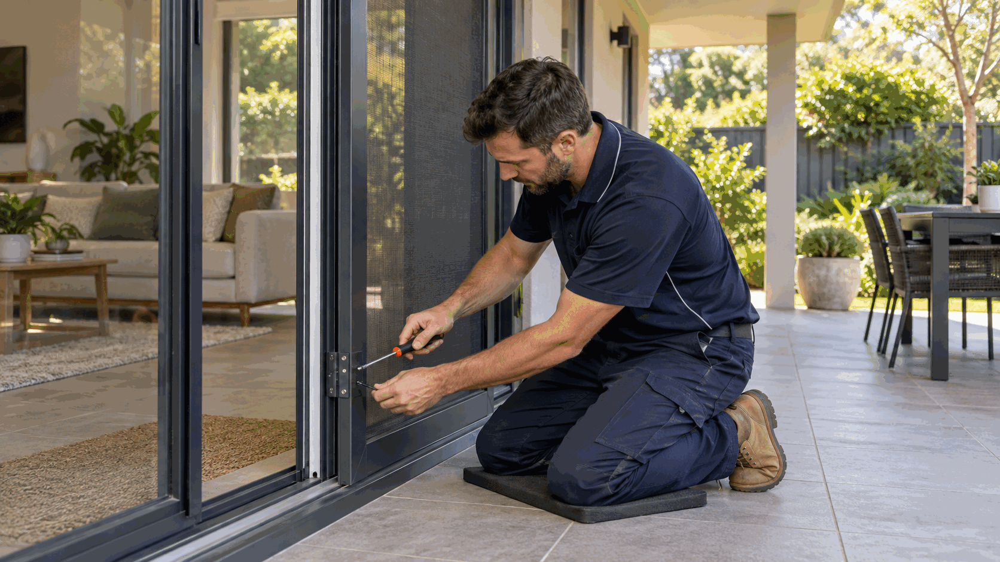

Openings and security
Fly Screens & Repairs
Fly-screen services cover new mesh screens, remeshing, frame repairs and adjustments to fixed, sliding or hinged screen units.
Also listed as: Fly Screens, Flyscreen Repair.
Describe this request
Fly Screens & Repairs service guide
Fly Screens & Repairs in Perth: Common Questions
What work is typically included in Fly Screens & Repairs?
Fly-screen services cover new mesh screens, remeshing, frame repairs and adjustments to fixed, sliding or hinged screen units.
- Remesh torn or brittle insect screens
- Repair or replace damaged frames, corners, rollers and handles
- Measure and fit screens for compatible windows or doors
What information helps confirm the scope?
Clear property information helps identify the right approach and site-specific constraints before work is arranged.
- Opening dimensions and screen type
- Photos of the full frame, track and damaged area
- Preferred mesh type and whether pets or coastal exposure are considerations
Are there safety, licensing or suitability issues to consider?
Screens on upper levels or difficult external openings require safe access; security-screen work may have product-specific installation requirements.
Requirements depend on the actual task, property and location, so they are checked before work proceeds.
Is flyscreen, screen repair, Fly Screens, Flyscreen Repair covered by this service?
These are common ways people describe this type of request. The actual work is assessed by the condition, access, materials involved and the result you want to achieve, rather than by a search term alone.
What can change the recommended approach?
Property condition, access, hidden damage, existing materials and any site-specific safety or approval requirements can affect the suitable next step.
How do I prepare a Fly Screens & Repairs service request in Perth?
Send frame measurements and photos of the opening so Ellis can scope the fly-screen solution.
Service pricing
Reference price
Third-party published Australian reference
A$130-500supply and install for standard window batches in cited guide
Reference checked 2026-09-14
Published sources
Perth metropolitan service area
Talk to Our Perth Service Team
Tell the Ellis Perth office what needs attention and your suburb or postcode. Our local team will discuss the practical next step with you.
Talk directly with our Perth team
Discuss This Service Request
Tell us what needs fixing, where the property is and any access details. We will discuss the job directly with you.